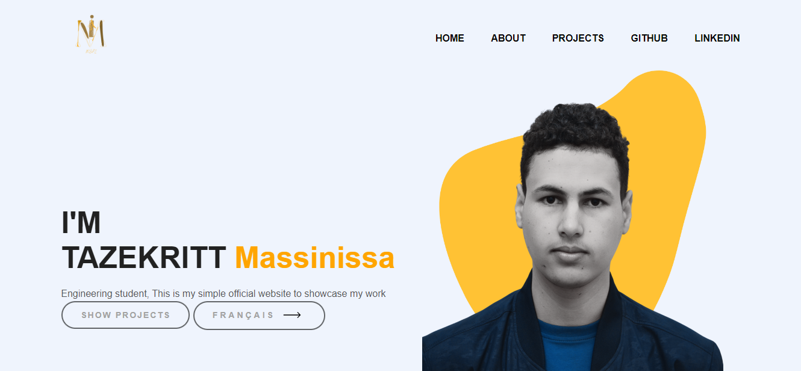

Building My Portfolio with HTML and CSS
This is a personal portfolio website built using HTML and CSS. The website showcases my skills, experiences, and projects to potential employers or clients. The website is designed to be visually appealing, easy to navigate, and informative.
The website is built using HTML to structure the content and CSS to style the layout and design. The HTML markup is semantic and follows best practices for accessibility and SEO. The CSS code is organized and optimized for performance.The portfolio website consists of several sections, including an introduction, about me section, skills section, projects section. The design is clean and minimalist, with a focus on showcasing my work and abilities.
The website is responsive and works on a variety of devices, from desktops to mobile phones. The navigation menu is easy to use and adapts to different screen sizes.